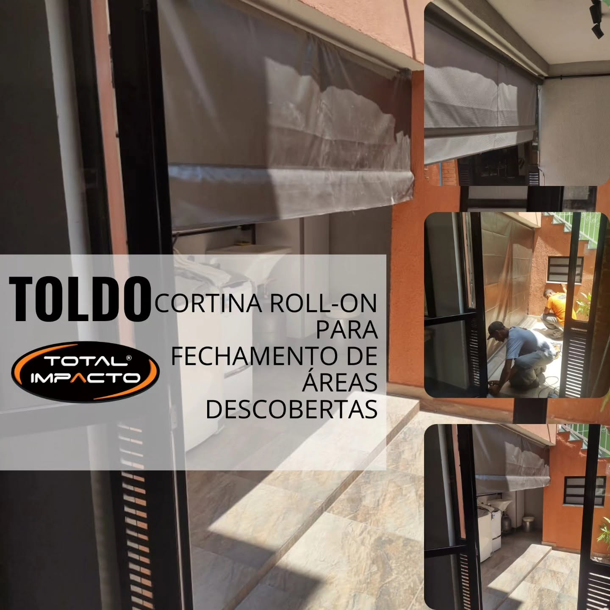
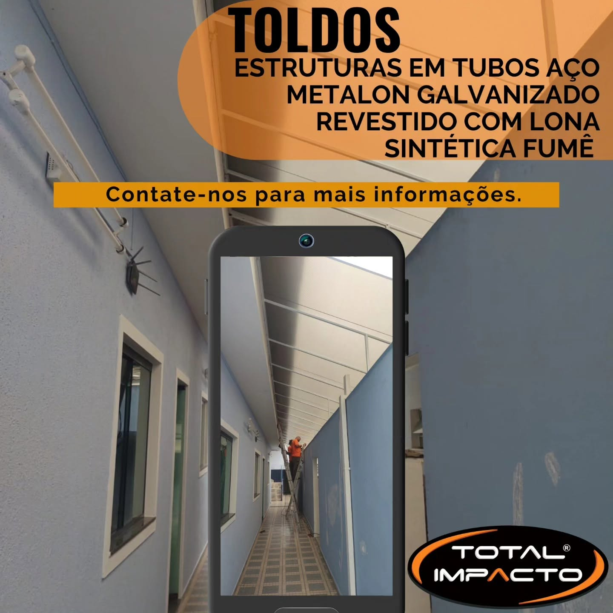

Fechamento prático pra áreas descobertas — varandas, quintais e espaços externos protegidos do sol e da chuva.
Nem sempre a solução pra uma área descoberta é uma cobertura fixa. Quando o que você precisa é flexibilidade — abrir quando o dia está bom, fechar quando bate vento ou chuva — o toldo cortina roll-on é a resposta certa. Funciona como uma cortina que enrola e desenrola sob demanda, fechando varandas, quintais, áreas de serviço e espaços externos sem obra.
É uma solução rápida de instalar, com bom custo-benefício, ideal pra quem quer resolver o problema do vento e da chuva batendo em áreas abertas sem perder a possibilidade de manter o espaço aberto quando quiser. A Total Impacto instala com estrutura reforçada e acabamento que acompanha o padrão do restante da fachada ou do ambiente.

🔍
🔍Fale com a gente e receba um orçamento sem compromisso.
Solicitar orçamento